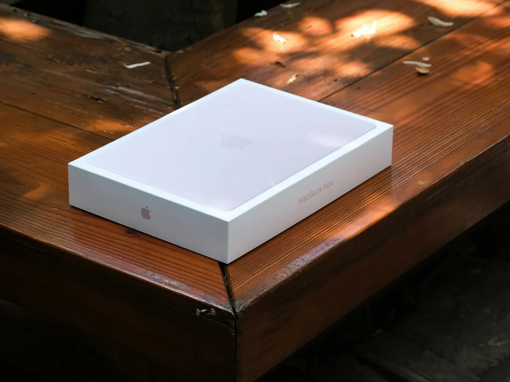
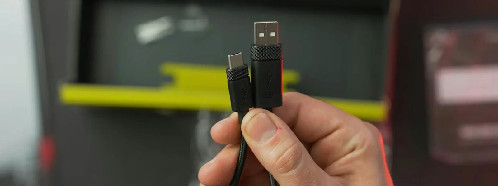
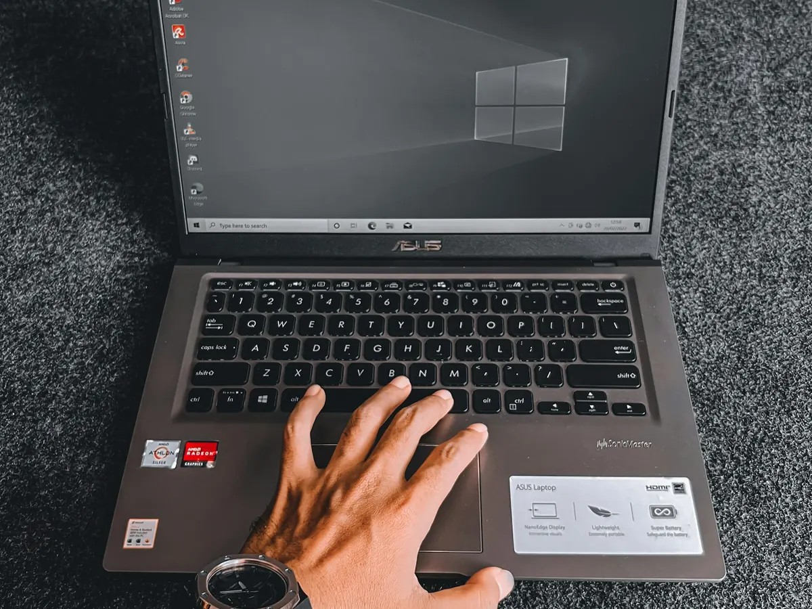
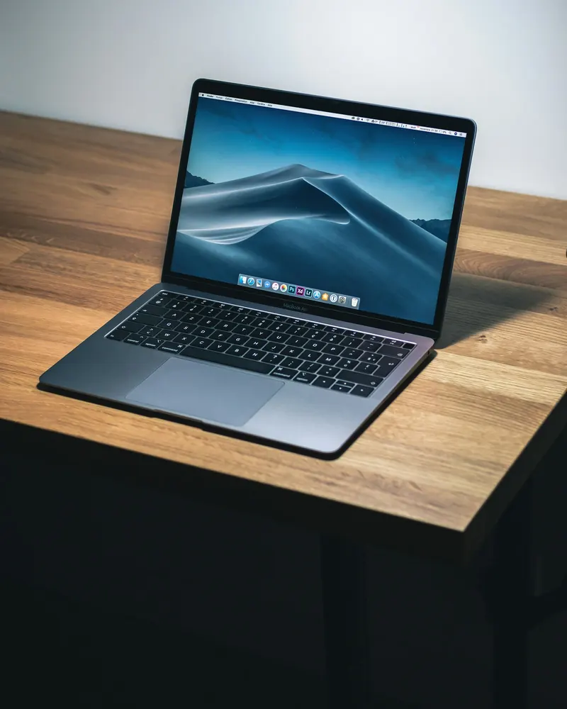
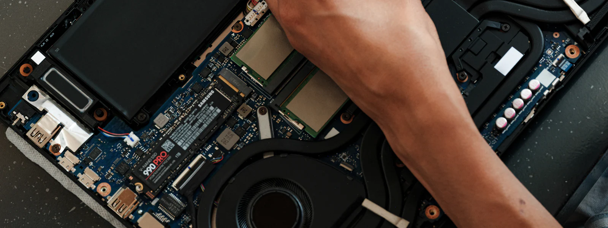

Conseil d'achat
Le bon modèle pour votre usage, en toute indépendance, sans vous suréquiper.
Vous venez d'acheter un ordinateur, un smartphone ou une tablette, ou vous hésitez encore ? Nous vous conseillons, le mettons en service et transférons toutes vos données, pour que vous retrouviez vos habitudes dès le premier jour.

Du choix du modèle jusqu'au recyclage de l'ancien.
Le bon modèle pour votre usage, en toute indépendance, sans vous suréquiper.
Installation, mises à jour, comptes, sécurité : votre ordinateur prêt à l'emploi dès le premier jour.
Documents, photos, musique et favoris copiés depuis l'ancien ordinateur, rien n'est oublié.
Messagerie, contacts, calendriers et comptes en ligne reconfigurés à l'identique.
Vos logiciels habituels réinstallés, l'imprimante et le Wi-Fi reconnectés.
Effacement sécurisé de vos données avant de le donner, le revendre ou le recycler.
Nous travaillons sur une copie de vos données, et l'ancien ordinateur n'est effacé qu'une fois tout vérifié.

Nouveau smartphone ou nouvelle tablette ? Contacts, photos, messages, applications : nous transférons tout depuis l'ancien appareil, puis synchronisons vos photos et vos contacts avec votre ordinateur.
Un échange rapide pour cerner vos besoins, et une recommandation claire.
Mise en service, transfert de vos données et de vos comptes, chez vous ou sur votre lieu de travail.
Nous restons joignables : une question sur votre nouvel ordinateur, un appel suffit.

Windows 10 ne reçoit plus de mises à jour de sécurité gratuites depuis le 14 octobre 2025. Avant d'en racheter un, nous vérifions si votre ordinateur peut passer à Windows 11. Sinon, nous vous accompagnons dans le choix d'un nouveau modèle et transférons tout.
Faire vérifier mon ordinateur
Oui. Nous partons de votre usage (internet, photos, bureautique, jeux, télétravail) pour vous conseiller un modèle adapté, en toute indépendance, sans lien avec une marque ou un magasin.
Oui : documents, photos, musique, favoris, comptes e-mail, contacts et, lorsque c'est possible, les mots de passe enregistrés. Nous vérifions tout avec vous avant de terminer.
Oui. Nous transférons vos fichiers et vos comptes, puis nous vous montrons les différences pour que vous preniez vite vos repères.
Nous effaçons vos données de façon sécurisée, puis vous pouvez le donner, le revendre ou le recycler. Nous vous indiquons où le déposer pour qu'il soit recyclé correctement.
Oui : mise en service, transfert des contacts, photos et applications depuis votre ancien appareil, et synchronisation avec votre ordinateur.
Retrouvez tous nos services sur la page assistance aux particuliers.

Appelez-nous avant ou après l'achat : nous nous occupons de la mise en service et du transfert.